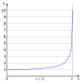

relativistic

Definition: Relativistic speed refers to speed at which relativistic effects become significant to the desired accuracy of measurement of the phenomenon being observed. Relativistic effects are those discrepancies between values calculated by models considering and not considering relativity. Related words are velocity, rapidity, and celerity which is proper velocity. Speed is a scalar, being the magnitude of the velocity vector which in relativity is the four-velocity and in three-dimension Euclidean space a three-velocity. Speed is empirically measured as average speed, although current devices in common use can estimate speed over very small intervals and closely approximate instantaneous speed. Non-relativistic discrepancies include cosine error which occurs in speed detection devices when only one scalar component of the three-velocity is measured and the Doppler effect which may affect observations of wavelength and frequency. Relativistic effects are highly non-linear and for everyday purposes are insignificant because the Newtonian model closely approximates the relativity model. In special relativity the Lorentz factor is a measure of time dilation, length contraction and the relativistic mass increase of a moving object.
Source: Wikipedia
Wikipedia Page (Something wrong with this association? Let us know.)
Wikidata Page (Something wrong with this association? Let us know.)